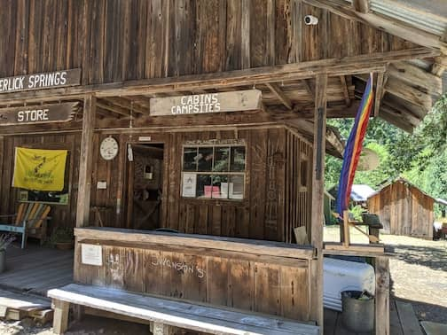
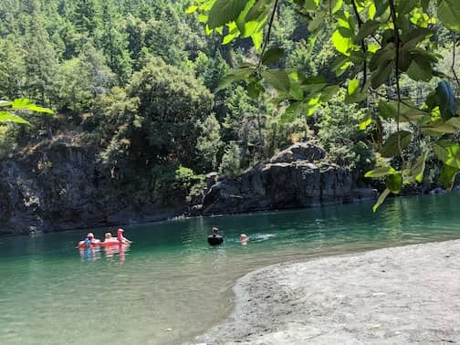
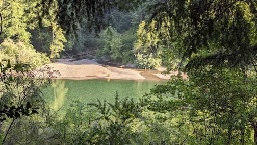
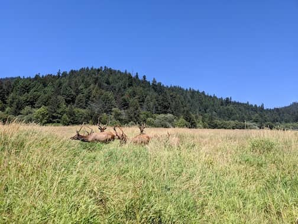
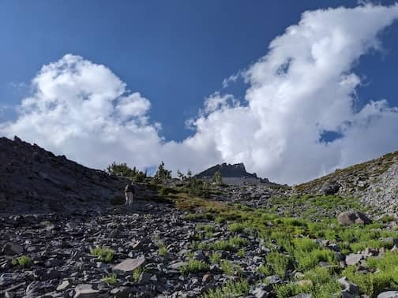
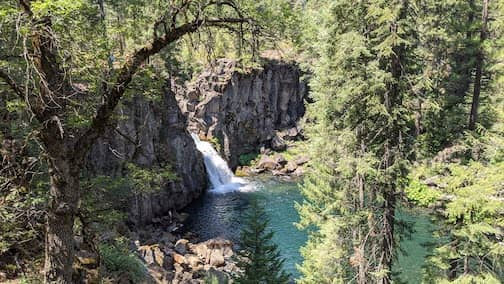

Summer Roadtrip to Trinity outpost Mt Shasta
Jul 9 - 20. Our second summer roadtrip this summer. This time we traveled to Trinity County, Humboldt County, Shasta County and Plumas County.
First stop was 2 nights at Trinity Outpost, a very cool private campground in a very remote forest in Trinity County, owned by a nice couple.
We then stayed 2 nights at View Crest Lodge, then camped again for 3 nights in Jedediah Smith State Park which had nice huge clean shower rooms. And we saw wild elks.
Next stop was an airbnb in Mount Shasta for 3 nights. We were supposed to stay for 2 more nights at a yurt at Quincy, Plumas County, but we went home instead because it was too hot to sleep in the yurt.
 Trinity Outpost Wilderness Resort
 Nice swimming hole at Smith River
 River at our campground at Jedediah Smith State Park. Water was very clear but cold
 Wild elks ignoring tourists gawking at them
 Long but beautiful hike at Mt Shasta
 One of the three Falls on McCloud River